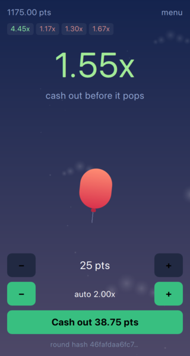

Casino · 25 min · Intermediate
Ascent is a crash game: a balloon rises, a multiplier climbs with it, and at a moment nobody can predict the balloon pops. Cash out before it does and you keep your bet times the multiplier. Wait one tick too long and you keep nothing.
It is a deceptively small game to describe and a surprisingly interesting one to build, because the fun lives entirely in a number going up and in the player's nerve running out. There is no enemy to fight and no level to design. There is a curve, a clock, and a button.

By the end of this tutorial you will have a complete, publishable Felgo game: a balloon that rises with the multiplier, a betting window that opens and closes on its own, particles when the round pops, sound, persistent points, statistics, and a build that runs on both macOS and iOS.
You will also have built the part most crash games keep quiet about. Before each round starts, Ascent shows you the SHA-256 hash of the seed that decides where the balloon pops. When the round is over it reveals the seed. Anyone can hash it, compare it to what they were shown, and recompute the crash point themselves. The game cannot change its mind after seeing your bet, and you cannot read the outcome out of the hash. This is called a provably fair scheme, and it is the reason the architecture in this tutorial looks the way it does.
Before writing anything, it is worth listing what a round actually consists of. Take a moment to guess before reading on - it is a short list, and the shape of the code follows directly from it.
The first four are plain C++ with no idea that Felgo or QML exist, which is what makes them testable. The last one is QML, where Felgo does the heavy lifting. Every chapter below builds one of those pieces and then shows it on screen.